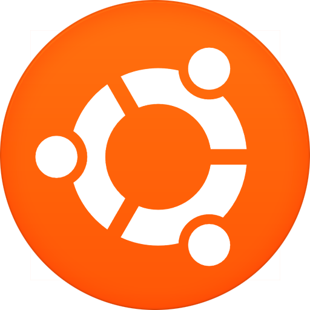

UBUNTU
Ubuntu – kompletna dystrybucja systemu operacyjnego GNU/Linux, przeznaczona głównie do zastosowań biurowych i domowych (ang. desktop). Powstała również wersja serwerowa oraz na netbooki. Rozwój tej ostatniej zakończył się w 2011 roku, gdyż zdecydowano o połączeniu wydań dla komputerów biurowych i domowych z wersją dla netbooków, jednocześnie dodając nową powłokę graficzną – Unity – będącą nakładką na popularnego GNOME.

Źródło informacji: Wikipedia